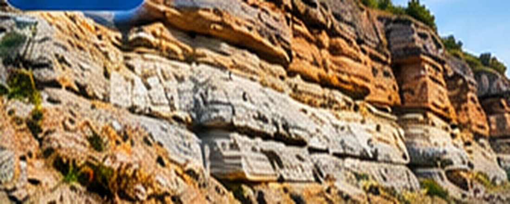

Геологічна будова території України
Географія · 8 клас · дослідницький урок (орієнтовно 45 хв)

📖 На що звернути увагу · коротка теорія
Ключові поняття: Кристалічні породи; осадовий чохол; геологічна карта; розріз.
Геологічна карта показує поширення порід різного віку та походження. Кристалічний фундамент платформ перекритий осадовим чохлом різної потужності. Геологічний розріз допомагає уявити будову надр.
Головне запитання: Навчіться читати умовні позначення геологічної карти та розрізу.
🔬 Дослідницький симулятор
Змініть параметри, порівняйте результати та сформулюйте закономірність. Навчальна модель спрощена.
📊 Аналіз матеріалу
Побудуйте схему з трьох шарів порід та поясніть, який із них утворився раніше за умови непорушеного залягання.
🧠 Тест із перевіркою
Що показує геологічний розріз?
Тест ще не виконано
🌍 Компетентнісне завдання
Уявіть, що планується будівництво тунелю. Які дані про геологічну будову потрібно зібрати перед початком робіт?
Цю відповідь перевіряє вчитель; автоматична оцінка не виставляється.
✍️ Рефлексія та PDF
Яку закономірність Ви встановили? Які дані могли б змінити Ваш висновок?
У вікні друку оберіть «Зберегти як PDF».